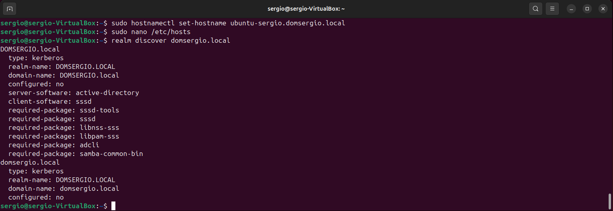
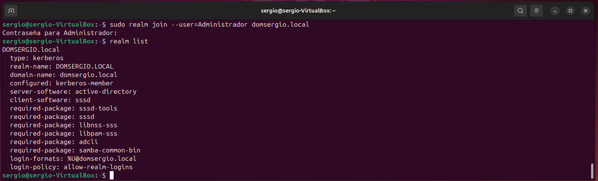

Integración de Ubuntu 24.04 LTC en Dominio Windows Server
Utilidad y Ventajas
La integración de equipos Ubuntu en un dominio Active Directory de Windows Server proporciona varios beneficios significativos:
- Gestión centralizada de usuarios: Los usuarios pueden autenticarse con las mismas credenciales del dominio en equipos Windows y Linux
- Políticas de seguridad unificadas: Aplicación de políticas corporativas desde un único punto de administración
- Single Sign-On (SSO): Los usuarios acceden con una única cuenta a todos los recursos de la red
- Simplificación administrativa: Reduce la carga de trabajo al gestionar usuarios desde Active Directory
- Auditoría centralizada: Seguimiento de accesos y eventos de seguridad desde el controlador de dominio
- Integración con recursos compartidos: Acceso transparente a carpetas compartidas en servidores Windows
Requisitos Previos
Antes de comenzar, asegúrate de tener:
- Ubuntu 24.04 LTS instalado y actualizado
- Conectividad de red con el controlador de dominio
- Nombre de dominio DNS configurado correctamente
- Credenciales de administrador del dominio
- Resolución DNS funcional hacia el controlador de dominio
Proceso de Integración
1. Actualización del Sistema
Primero actualizamos el sistema para asegurar que todos los paquetes estén en su versión más reciente:
2. Instalación de Paquetes Necesarios
Instalamos los paquetes requeridos para la integración con Active Directory:
sudo apt install realmd sssd sssd-tools libnss-sss libpam-sss adcli samba-common-bin oddjob oddjob-mkhomedir packagekit -y
Descripción de paquetes clave:
- realmd: Herramienta de alto nivel para configurar la integración con dominios
- sssd: System Security Services Daemon, gestiona la autenticación y caché de usuarios
- adcli: Utilidad para realizar operaciones en Active Directory
- oddjob-mkhomedir: Crea automáticamente directorios home para usuarios del dominio
3. Configuración de DNS
Es fundamental que el equipo pueda resolver correctamente el dominio. Edita el archivo de configuración de red:
Añade o modifica la configuración DNS (ajusta según tu red):
network:
version: 2
renderer: networkd
ethernets:
enp0s3: # Adaptador de red. Verificar que es correcto
dhcp4: no
addresses:
- 192.168.0.100/24 # IP y máscara
routes:
- to: default
via: 192.168.0.1 # Gateway
nameservers:
addresses:
- 192.168.0.1 # IP del controlador de dominio. DNS
- 8.8.8.8 # DNS secundario
search:
- midominio.local # Nombre del domino.
Aplica los cambios:
Para verificar la configuración
4. Configuración del Hostname
Establece un nombre de host FQDN (Fully Qualified Domain Name):
Edita también el archivo hosts:
Cambia as dos primeras líneas por algo similar a:
5. Verificación de Conectividad con el Dominio
Comprueba que puedes descubrir el dominio:
Deberías ver información del dominio, incluyendo el nombre del servidor y las capacidades soportadas.
{kind=link}

6. Unión al Dominio
Únete al dominio usando las credenciales de un administrador:
Se te pedirá la contraseña del administrador del dominio. Si todo va bien, el equipo quedará registrado en Active Directory.
Para verificar que estás en el dominio:
{kind=link}

7. Configuración de SSSD
SSSD son las siglas de System Security Services Daemon (Demonio de Servicios de Seguridad del Sistema). Es un servicio del sistema en Linux que proporciona acceso a diferentes mecanismos de autenticación e identidad remota.
El SSSD actúa como un intermediario inteligente entre tu sistema Linux local y fuentes de identidad remotas como:
- Active Directory (AD) de Windows
- LDAP (Lightweight Directory Access Protocol)
- Kerberos
- FreeIPA
- Otros servicios de directorio
El archivo de configuración principal de SSSD se encuentra en /etc/sssd/sssd.conf. Editamos para optimizar la configuración:
Configuración recomendada:
[sssd]
domains = midominio.local
config_file_version = 2
services = nss, pam
[domain/midominio.local]
ad_domain = midominio.local
krb5_realm = MIDOMINIO.LOCAL
realmd_tags = manages-system joined-with-adcli
cache_credentials = True
id_provider = ad
krb5_store_password_if_offline = True
default_shell = /bin/bash
ldap_id_mapping = True
use_fully_qualified_names = False
fallback_homedir = /home/%u
access_provider = ad
Parámetros importantes:
use_fully_qualified_names = False: Permite login sin especificar el dominio (usuario en vez de usuario@dominio)cache_credentials = True: Permite login offline con credenciales en cachéfallback_homedir = /home/%u: Define la ubicación de los directorios home
Ajusta permisos del archivo:
Reinicia el servicio SSSD:
8. Configuración de PAM para Creación Automática de Directorios Home
Edita el archivo de sesión PAM:
Añade al final:
Esto creará automáticamente el directorio home cuando un usuario del dominio inicie sesión por primera vez.
9. Configuración de Sudoers (Opcional)
Para permitir que ciertos grupos del dominio tengan privilegios sudo:
Añade líneas como:
%administradores_dominio@midominio.local ALL=(ALL:ALL) ALL
%grupo_ti@midominio.local ALL=(ALL:ALL) ALL
O si configuraste use_fully_qualified_names = False:
10. Verificación de la Integración
Comprueba que puedes obtener información de usuarios del dominio:
Prueba el login con un usuario del dominio:
Perfiles Móviles y Carpetas Personales
Perfiles Móviles
Limitación importante: Los perfiles móviles de Windows (Roaming Profiles) no son completamente compatibles con Linux/Ubuntu. Esto se debe a diferencias fundamentales en:
- Estructura del sistema de archivos y rutas
- Configuraciones específicas de aplicaciones
- Formato del registro de Windows vs archivos de configuración Linux
- Permisos y atributos de archivos diferentes
Alternativa recomendada: En lugar de perfiles móviles tradicionales, se puede implementar sincronización de datos específicos mediante:
- Scripts de login/logout que sincronicen carpetas específicas
- Uso de servicios como Nextcloud o similares
- Montaje de directorios home desde un servidor NFS o CIFS
Carpetas Personales Enlazadas (Folder Redirection)
Sí es posible implementar redirección de carpetas personales a ubicaciones de red. Existen dos enfoques principales:
Opción 1: Montaje Automático de Carpetas de Red (Recomendado)
Configura el montaje automático de carpetas compartidas SMB al iniciar sesión. Edita o crea /etc/security/pam_mount.conf.xml:
<?xml version="1.0" encoding="utf-8" ?>
<pam_mount>
<volume
user="*"
fstype="cifs"
server="servidor-archivos.midominio.local"
path="usuarios/%(USER)"
mountpoint="/home/%(USER)/Documentos"
options="sec=krb5,cruid=%(USERUID),dir_mode=0700,file_mode=0600,uid=%(USERUID),gid=%(USERGID)"
/>
<volume
user="*"
fstype="cifs"
server="servidor-archivos.midominio.local"
path="perfiles/%(USER)/Escritorio"
mountpoint="/home/%(USER)/Escritorio"
options="sec=krb5,cruid=%(USERUID),dir_mode=0700,file_mode=0600,uid=%(USERUID),gid=%(USERGID)"
/>
<mkmountpoint enable="1" remove="true" />
</pam_mount>
Instala el paquete necesario:
Opción 2: Enlaces Simbólicos Personalizados
Crea un script que se ejecute al login para crear enlaces simbólicos:
Contenido del script:
#!/bin/bash
# Servidor de archivos
SERVIDOR="//servidor-archivos.midominio.local"
USUARIO=$(whoami)
# Montar carpeta personal si no está montada
if [ ! -d "/mnt/datos_usuario" ]; then
sudo mkdir -p /mnt/datos_usuario
fi
if ! mountpoint -q "/mnt/datos_usuario"; then
sudo mount -t cifs "${SERVIDOR}/usuarios/${USUARIO}" /mnt/datos_usuario \
-o username=${USUARIO},domain=MIDOMINIO,sec=krb5,uid=$(id -u),gid=$(id -g)
fi
# Crear enlaces simbólicos si no existen
[ ! -L "$HOME/Documentos" ] && ln -sf /mnt/datos_usuario/Documentos "$HOME/Documentos"
[ ! -L "$HOME/Descargas" ] && ln -sf /mnt/datos_usuario/Descargas "$HOME/Descargas"
Dale permisos de ejecución:
Opción 3: Directorios Home Centralizados (Más Robusto)
Configura SSSD para montar automáticamente el directorio home completo desde un servidor de archivos. Modifica /etc/sssd/sssd.conf:
[domain/midominio.local]
# ... configuración existente ...
override_homedir = /home/%u
auto_private_groups = true
# Si usas un servidor de archivos centralizado
# override_homedir = /mnt/homes/%u
Luego configura el montaje automático mediante /etc/fstab o autofs:
Edita /etc/auto.master:
Crea /etc/auto.home:
* -fstype=cifs,credentials=/etc/samba/.smbcredentials,uid=&,gid=&,dir_mode=0700,file_mode=0600 ://servidor-archivos.midominio.local/homes/&
Consideraciones de Seguridad para Carpetas de Red
- Utiliza siempre Kerberos (
sec=krb5) para la autenticación en recursos SMB/CIFS - Evita almacenar credenciales en texto plano
- Configura permisos restrictivos (700 para directorios, 600 para archivos)
- Implementa cuotas de disco en el servidor de archivos
- Considera la encriptación del tráfico SMB (SMB 3.0+)
Solución de Problemas
El equipo no se une al dominio
- Verifica la resolución DNS:
nslookup midominio.local - Comprueba la sincronización horaria:
timedatectl - Revisa logs:
sudo journalctl -u realmd -f
Los usuarios no pueden iniciar sesión
- Verifica SSSD:
sudo systemctl status sssd - Revisa logs de SSSD:
sudo tail -f /var/log/sssd/*.log - Prueba getent:
getent passwd usuario_dominio
Problemas con el directorio home
- Verifica permisos de
/home - Comprueba la configuración PAM en
/etc/pam.d/common-session - Revisa la configuración de
fallback_homediren sssd.conf
Montaje de carpetas de red falla
- Verifica que el usuario tiene permisos en el servidor de archivos
- Comprueba la configuración de Kerberos:
klist - Prueba el montaje manual:
sudo mount -t cifs //servidor/recurso /mnt/prueba -o user=usuario
Mantenimiento
Salir del dominio
Si necesitas retirar el equipo del dominio:
Actualizar caché de usuarios
Para forzar la actualización de la información de usuarios:
Renovar ticket Kerberos manualmente
Conclusión
La integración de Ubuntu 24.04 LTS en un dominio Windows Server es totalmente funcional y proporciona autenticación centralizada efectiva. Aunque los perfiles móviles tradicionales de Windows no son compatibles, las carpetas personales pueden redirigirse exitosamente mediante montajes SMB/CIFS automáticos, proporcionando a los usuarios acceso consistente a sus datos independientemente del equipo que utilicen.
Esta configuración es ideal para entornos heterogéneos donde coexisten sistemas Windows y Linux, permitiendo una administración unificada y mejorando la experiencia del usuario.
---
---
Entendido. Retomamos el procedimiento del vídeo, utilizando el método Samba/Winbind, y nos ceñiremos estrictamente a los pasos que has proporcionado. Incorporaré la configuración de red inicial, el usuario Administrador y el dominio DOMSERGIO.local, además de incluir la adición del DC a /etc/hosts para asegurar la resolución local en entornos de prueba.
💻 Integración de Cliente Ubuntu a Active Directory (Método Winbind)
📌 Resumen de Parámetros
| Elemento | Valor | Descripción |
|---|---|---|
| Dominio (REALM) | DOMSERGIO.LOCAL |
El dominio Kerberos (siempre en mayúsculas). |
| Workgroup (NetBIOS) | DOMSERGIO |
El nombre NetBIOS del dominio. |
| DC/DNS IP | 192.168.100.1 |
Dirección IP del Controlador de Dominio y Servidor DNS. |
| Cliente Hostname | ud101 |
Nombre de host del cliente Ubuntu. |
| Usuario de Unión | Administrador |
Usuario con permisos para unir máquinas al dominio. |
Paso 1: Configuración de Red Estática, Hostname y DNS
Es vital que el cliente Ubuntu tenga una IP fija y use exclusivamente el Controlador de Dominio (DC) como servidor DNS.
1.1. Configuración de Netplan
Edita el archivo de configuración de Netplan (ej. /etc/netplan/01-network-manager-all.yaml) para usar NetworkManager y definir la configuración estática.
Contenido (Asegúrate de sustituir [nombre_interfaz]):
network:
version: 2
renderer: NetworkManager
ethernets:
[nombre_interfaz]:
dhcp4: no
addresses:
- 192.168.100.51/24
routes:
- to: default
via: 192.168.100.1
nameservers:
addresses: [192.168.100.1]
search: [DOMSERGIO.local]
1.2. Cambiar Hostname
Establecemos el nombre de host del cliente Ubuntu.
1.3. Configuración de /etc/hosts (Crucial para entornos de prueba)
Añadir la IP y la URL del DC a /etc/hosts asegura que la resolución de nombres funcione sin depender completamente del servicio DNS en la fase inicial.
Añade esta línea al final del archivo (asumiendo que el DC se llama DC-SERVER):
1.4. Comprobar Conexión y Resolución
El ping debe ser exitoso y mostrar la IP del DC (192.168.100.1).
Paso 2: Sincronización Horaria (NTP)
El DC debe ser la fuente de tiempo, ya que Kerberos exige una diferencia horaria mínima.
# Instalar la utilidad ntpdate
sudo apt-get install ntpdate
# Consultar el desfase horario con el servidor (sin aplicar)
sudo ntpdate -q 192.168.100.1
# Sincronizar la hora de forma inmediata
sudo ntpdate 192.168.100.1
Paso 3: Instalación de Paquetes Necesarios y Kerberos
Instalamos Samba, Kerberos y Winbind.
Durante la instalación de Kerberos, asegúrate de configurar el REALM como DOMSERGIO.LOCAL (en mayúsculas).
3.1. Comprobar Autenticación Kerberos
Intentamos obtener un ticket de Kerberos con el usuario Administrador del dominio.
Si el comando kinit no produce un error (después de ingresar la contraseña), Kerberos es funcional.
Paso 4: Configuración de Samba (smb.conf)
Configuramos Samba para que actúe como un miembro de dominio de Active Directory (ADS).
# Mover archivo smb.conf y crear copia de seguridad
mv /etc/samba/smb.conf /etc/samba/smb.conf.initial
# Crear archivo smb.conf vacío
sudo nano /etc/samba/smb.conf
Contenido de smb.conf:
[global]
workgroup = DOMSERGIO
realm = DOMSERGIO.LOCAL
netbios name = ud101
security = ADS
dns forwarder = 192.168.100.1
idmap config * : backend = tdb
idmap config *:range = 50000-1000000
template homedir = /home/%D/%U
template shell = /bin/bash
winbind use default domain = true
winbind offline logon = false
winbind nss info = rfc2307
winbind enum users = yes
winbind enum groups = yes
vfs objects = acl_xattr
map acl inherit = Yes
store dos attributes = Yes
4.1. Reiniciar y Habilitar Servicios
# Reiniciar todos los daemons de samba
sudo systemctl restart smbd nmbd
# Habilitar los servicios de samba
sudo systemctl enable smbd nmbd
Paso 5: Unir Ubuntu Desktop al Dominio
Usamos net ads join para registrar la máquina en Active Directory.
Introduce la contraseña del usuario Administrador. Si la unión es exitosa, se informará que la cuenta de equipo se creó.
Paso 6: Configurar Autenticación de Cuentas AD (NSS y Winbind)
Indicamos al sistema que use Winbind para la resolución de nombres y grupos.
6.1. Editar el Archivo NSS (/etc/nsswitch.conf)
# Editar el archivo de configuración del conmutador de servicio de nombres (NSS)
sudo nano /etc/nsswitch.conf
Las líneas deben quedar así (añadiendo winbind):
6.2. Reiniciar Winbind y Verificar
# Reinicar servicio winbind
sudo systemctl restart winbind
# Listar usuarios y grupos del dominio (prueba de comunicación)
wbinfo -u
wbinfo -g
Si se muestran usuarios y grupos de DOMSERGIO.local, la comunicación de Winbind es correcta.
6.3. Verificar el Módulo Winbind con getent
Verificamos que el sistema pueda resolver la identidad del usuario administrador.
sudo getent passwd | grep Administrador
sudo getent group | grep 'Administradores del Dominio'
id Administrador
Paso 7: Configuración de PAM y Directorio Home
Configuramos el sistema para la autenticación de dominio y la creación automática de directorios home.
7.1. Configurar pam-auth-update
Asegúrate de seleccionar la opción: [*] Create home directory.
7.2. Editar common-account para Crear Directorios
Esto garantiza que el directorio home se cree al iniciar sesión.
Añade la siguiente línea al final del archivo:
Paso 8: Pruebas Finales de Autenticación
8.1. Autenticarse por Terminal
Probamos el inicio de sesión con el usuario de dominio Administrador.
Si el inicio de sesión es exitoso, el prompt cambiará a la shell del usuario y se creará su directorio home.
8.2. Añadir Cuenta de Dominio a Sudoers
Para permitir que el usuario de dominio ejecute comandos con sudo.
# Añadir cuenta de dominio a sudoers (al grupo 'sudo' local)
sudo usermod -aG sudo Administrador
# Listar grupo sudoers para verificar la inclusión
getent group sudo
8.3. Autenticarse con GUI
El usuario puede iniciar sesión en la interfaz gráfica usando solo su nombre de usuario de dominio (ej. Administrador) y su contraseña de AD.
¿Te gustaría que generemos una serie de ejercicios de verificación, incluyendo el uso de sudo y la verificación del grupo, para que tus alumnos pongan a prueba esta configuración final?